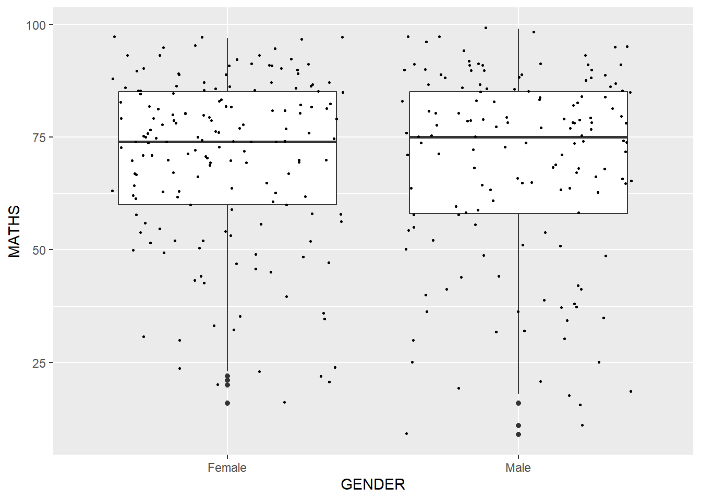

Code
pacman::p_load(tidyverse)The code below uses p_load() of pacman package to check if tidyverse packages are installed in the computer. If they are, then they will be launched into R.
pacman::p_load(tidyverse)exam_data <- read_csv("data/Exam_data.csv")
show_col_types = FALSE
knitr::kable(head(exam_data))| ID | CLASS | GENDER | RACE | ENGLISH | MATHS | SCIENCE |
|---|---|---|---|---|---|---|
| Student321 | 3I | Male | Malay | 21 | 9 | 15 |
| Student305 | 3I | Female | Malay | 24 | 22 | 16 |
| Student289 | 3H | Male | Chinese | 26 | 16 | 16 |
| Student227 | 3F | Male | Chinese | 27 | 77 | 31 |
| Student318 | 3I | Male | Malay | 27 | 11 | 25 |
| Student306 | 3I | Female | Malay | 31 | 16 | 16 |
Applied to visualizations, grammar of graphics is a grammar used to describe and create a wide range of statistical graphics. This layered approach is implemented in ggplot2, an R package for creating data-driven graphics. It has become the go-to tool for making plots flexibly in R.

Data: The dataset being plotted.
Aesthetics take attributes of the data and use them to influence visual characteristics, such as position, colours, size, shape, or transparency.
Geometrics: The visual elements used for our data, such as point, bar or line.
Facets split the data into subsets to create multiple variations of the same graph (paneling, multiple plots).
Statistics, statiscal transformations that summarise data (e.g. mean, confidence intervals).
Coordinate systems define the plane on which data are mapped on the graphic.
Themes modify all non-data components of a plot, such as main title, sub-title, y-aixs title, or legend background.
Let’s examine the first three essential layers for making a plot - Data, Aesthetics and Geometries.
First, let’s call the ggplot() function using the below code.
ggplot(data=exam_data)ggplot(data=exam_data,
aes(x= MATHS))
Geometric objects are the actual marks we put on a plot. A plot must have at least one geom and there is no upper limit. You can add a geom to a plot using the + operator.
Examples include:
geom_point() for drawing individual points (e.g., a scatter plot)
geom_line() for drawing lines (e.g., for a line charts)
geom_bar() for drawing bars (e.g., for bar charts)
geom_jitter() to add a small amount of random variation to the location of each point
geom_map() for drawing polygons in the shape of a map!
ggplot(data = exam_data,
aes(x = RACE)) +
geom_bar()
ggplot(data = exam_data,
aes(x = RACE,
y = SCIENCE)) +
geom_point()
ggplot(data=exam_data,
aes(x= ENGLISH)) +
geom_histogram(bins=20,
color="black",
fill="#630e27") ggplot(data=exam_data,
aes(x= GENDER,
y= SCIENCE)) +
geom_jitter(width = 0.5, height = 0.5,
bins=20,
aes(colour = "#630e27"))
ggplot(data=exam_data,
aes(x=MATHS,
y=ENGLISH)) +
geom_point() +
geom_smooth(linewidth=0.5)ggplot(data=exam_data,
aes(y = MATHS, x= GENDER)) +
geom_boxplot()
ggplot(data=exam_data,
aes(y=MATHS,
x=GENDER)) +
geom_boxplot() +
geom_point(position="jitter",
size=0.5)